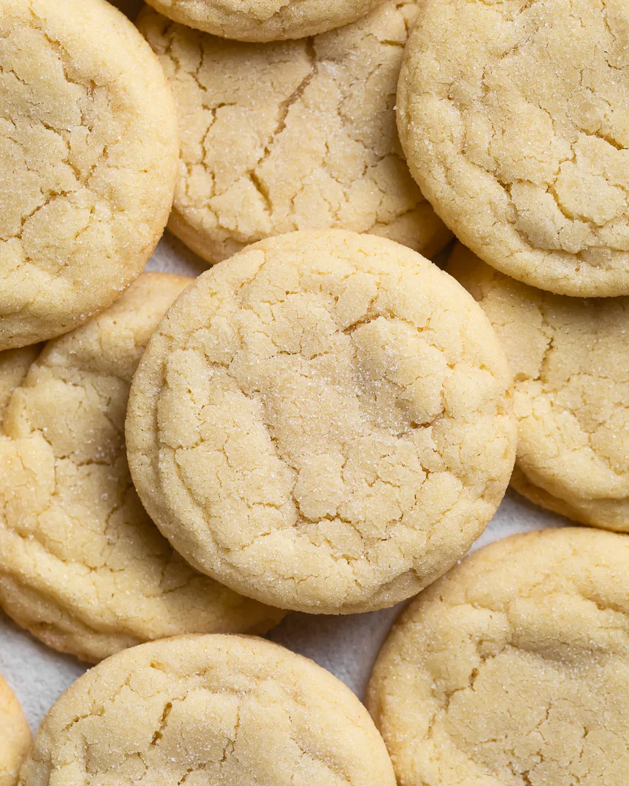

Sugar Cookies

Ingredients
- 1 cup unsalted butter, softened
- 1 cup granulated sugar
- 1 large egg
- 2 teaspoons vanilla extract
- 3 cups all-purpose flour
- 1/2 teaspoon baking powder
- 1/2 teaspoon salt
- Additional granulated sugar for rolling (optional)
Instructions
- Preheat oven to 350°F (175°C). Line baking sheets with parchment paper.
- In a large mixing bowl, cream together softened butter and granulated sugar until light and fluffy.
- Beat in egg and vanilla extract until well combined.
- In a separate bowl, whisk together flour, baking powder, and salt. Gradually add dry ingredients to the creamed mixture and mix until dough forms.
- If desired, roll dough into balls and coat with additional granulated sugar.
- Place dough balls on prepared baking sheets, spacing them apart.
- Using the bottom of a glass or a fork, flatten each dough ball slightly.
- Bake for 8 to 10 minutes, or until edges are lightly golden.
- Remove from oven and let cool on baking sheets for 5 minutes, then transfer to wire racks to cool completely.
- Enjoy your delicious homemade sugar cookies!